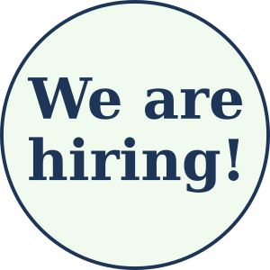
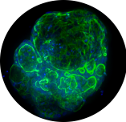

functional precision oncology for improved patient healthcare
News
2024-Oct We are thrilled to announce that Isofol Medical, Ahus, and Oncosyne got a late-breaking abstract accepted for poster presentation at the 36th EORTC-NCI-AACR symposium in Barcelona later this month.
2024-Oct On behalf Oncosyne and collaborators Dr. Sebastian Meltzer (Ahus) and Dr. Teijo Pellinen (FIMM), Jarle Bruun, Peter W, Eide and Christer A. Andreassen presented a poster entitled μCAN - drug discovery, development and diagnostics using clinical grade drug screening and predictive phenotyping of patient-derived tumoroids at the ELRIG UK Drug Discovery 2024 conference in London.
2024-May We are hiring! The coming year, we will validate our in vitro diagnostic test, expand to new disease indications and leverage our platform for drug development projects. Please see the attached advertisement for details.

2024-Mar Professor Åke Andrén-Sandberg is joining the team as a clinical advisor. Prof Andrén-Sandberg is a specialist in gastro-intestinal surgery with research focusing on pancreatic disease.
2024-Mar Hybrid Technology Hub and Oncosyne held a kickoff meeting initiating development of Oncosyne's next-generation in vitro diagnostic test for pancreatic cancer. The aim is to start clinical studies later this year.
2024-Feb Oncosyne presented at GoWest - Nordic Venture Capital Forum in Gothenburg. Through collaborators, customers, and providers, Oncosyne is building connections to the thriving biotech ecosystem in Västra Götaland.
2024-Feb Tone W. Trøen, Member of Parliament and Chair of Helse- og omsorgskomiteen visited the Oslo Cancer Cluster Incubator and Oncosyne's laboratories.
2023-Nov MedWatch publishes an interview with CEO Jarle Bruun outlining company background, status and future plans (subscription paywall).
2023-Oct Oncosyne's Jarle Bruun and Peter W. Eide guest the Radium podcast for a second time presenting plans for the coming years (episode 283, Norwegian only).
2023-Aug Oncosyne finishes a research and development project paving way for clinical validation. We are grateful for financial support from Regionale Forskningsfond Oslo and contributions from Akershus University Hospital and Institue for Molecular Medicine.
2023-Jun Recruitment for the Tailoring Treatment in Colorectal Cancer (TargetCRC) study is at 100% of the initial target of 40 patients. The first phase has been highly successful, and the target has been increased to a total of 80 patients.
2023-Apr Pharmaceutical company Isofol Medical announces a collaboration with Oncosyne pairing Isofol's expertise in drug development with Oncosyne's platform for drug sensitivity evaluation.

2023-Jan Preparing for upcoming verification and production phases, Oncosyne moves its pipeline into a dedicated laboratory space at Oslo Cancer Cluster Incubator.
2022-Dec Oncosyne, Akershus University Hospital, and CTC receive funding through the Eurostars-3 joint programme. The grant supports technology development and a clinical peformance study.
2022-Nov Recruitment for the Tailoring Treatment in Colorectal Cancer (TargetCRC) study is 50% completed and on schedule. An important study objective is to test Oncosyne's technology platform. The principal investigator is oncologist Dr. Sebastian Meltzer at Akershus University Hospital.
2022-May Patient-derived microtumors are growing in the lab. These are indispensable for finalizing our diagnostic platform. We are grateful for the support from the participating patients and our clinical collaborators.
2022-Apr Oncosyne lands its first investment round financing development towards the registrational clinical trial. The investors significantly strengthen the Board's business experience.
2022-Mar Oncosyne's Jarle Bruun and Peter W. Eide guest the Radium podcast (episode 219, Norwegian only).
2022-Feb Oncosyne recieves a generous grant from Regionale Forskningsfond Oslo for clinical research and development of our diagnostic test platform.
2022-Jan We welcome M.Sc. Christer Anker Andreassen who is joining the team as product developer! Mr. Andreassen will help finalizing our platform for clinical studies.
2021-Dec Oncosyne finishes a successful research collaboration with Dr. Teijo Pellinen at FIMM. The project was made possible through a generous grant from FORREGION-Oslo Aksershus/Norway Health Tech/The Research Council of Norway.
2021-Jun Oncosyne moves into OCCI’s shining laboratories. We are excited to become a part of this ambitious, dynamic growth environment.
About
Problem
Cancer is a major burden and associated costs are increasing rapidly. There is an urgent need for better treatments, and new therapies are approved at an encouraging rate. However, diagnostic tools for selecting which drugs are likely to be effective or not for individual patients are lacking. Hence, oncological therapy is characterized by ubiquitous under- and over-treatment. In fact, most patients who are treated with chemotherapy receive no clinical benefit, but still suffer from harmful side-effects. This is not only detrimental to patients, but also hugely wasteful to healthcare systems and society.
Solution
In vitro diagnostics based on clinical-grade drug screening has the potential to radically improve the therapeutic precision and efficacy in the treatment of most cancers. Crucially, it may pave the way for curative combination treatments in the future.
Company
Oncosyne is a biotechnology start-up. Our clinical-stage technology platform will be evaluated in a performance study anticipated to start in 2024. In brief, we cultivate the patient’s own living cancer cells and test them against an array of clinically relevant drugs and drug combinations. The product is a diagnostic report that identifies both which cancer drugs are likely to be efficacious and which are not. The test will be marketed as a therapeutic decision tool towards pharmaceutical industry, medical laboratories, and public and private hospitals.
Vision
Our vision is to provide game-changing functional diagnostic tools that give cancer patients significantly better and longer lives.
Team
Jarle Bruun
CEO & Co-founder
Peter W. Eide
CTO & Co-founder
Christer A. Andreassen
Product Developer
Advisors
Janne Nestvold
Business advisor
COO, Oslo Cancer Cluster Incubator
Thomas Andersson
Business advisor
Senior Business Advisor, Oslo Cancer Cluster Incubator
Øyvind S. Bruland
Clinical advisor
Professor of Clinical Oncology, University of Oslo
Åke Andrén-Sandberg
Clinical advisor
Professor of surgery
Anette Sjögren
Consultant, QMS
Regulatory advisor, Preventia AB
TBD
Careers
Open position autumn 2024. Please let us know if you're interested in joining an ambitious biotech start-up and bring game-changing cancer diagnostic to the clinic.